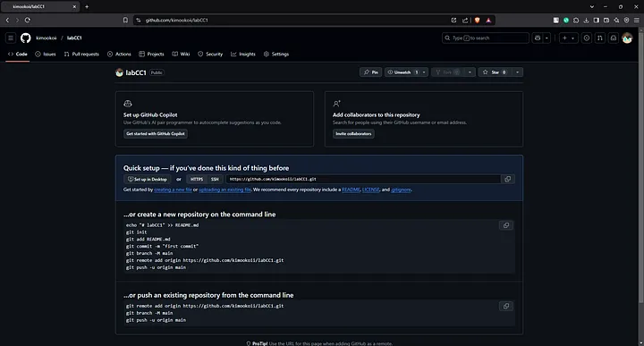
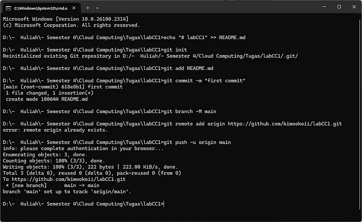
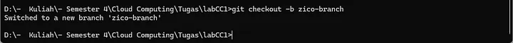
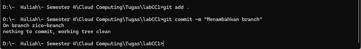
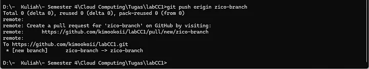
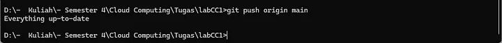

Dalam pengelolaan proyek perangkat lunak, kolaborasi yang efektif sangatlah penting. Git, bersama dengan platform seperti GitHub dan GitLab, memungkinkan tim untuk bekerja secara bersamaan tanpa mengganggu kode utama. Artikel ini akan memandu Anda melalui langkah-langkah dasar dalam menggunakan Git untuk mengelola proyek dengan lebih efisien.

1. Membuat Repository di GitHub/GitLab
Repository adalah tempat penyimpanan kode proyek. Ikuti langkah berikut untuk membuat repository:
- Masuk ke akun GitHub/GitLab Anda.
- Klik tombol New Repository.
- Masukkan nama repository, deskripsi (opsional), dan pilih jenis repository (public/private).
- Klik Create Repository.
Setelah repository dibuat, Anda dapat menginisialisasi proyek dengan perintah yang direkomendasikan oleh GitHub, atau menggunakan perintah berikut untuk menghubungkan repository lokal ke repository remote.
 2. Membuat Branch Baru
Branch digunakan untuk mengembangkan fitur atau memperbaiki bug tanpa mengganggu kode utama.
Gantilah nama-branch dengan nama cabang yang sesuai, misalnya zico-branch.
3. Melakukan Perubahan dan Commit
Setelah melakukan perubahan pada kode, Anda harus menyimpannya dengan commit.
4. Push ke Repository
Untuk menyimpan perubahan ke repository online, gunakan perintah berikut:
5. Membuat Pull Request dan Merge ke Main
Pull request digunakan untuk meminta penggabungan perubahan dari branch ke main.
- Masuk ke GitHub/GitLab dan buka repository Anda.
- Klik Pull request pada branch yang telah dipush.
- Tambahkan deskripsi perubahan dan klik New Pull Request.
- Setelah direview, jalankan perintah berikut untuk menggabungkan branch ke main:

6. Push ke Repository
Untuk menyimpan perubahan ke repository online, gunakan perintah berikut:
Kesimpulan
Git dan platform seperti GitHub/GitLab mempermudah pengelolaan proyek perangkat lunak, baik secara individu maupun dalam tim. Dengan memahami langkah-langkah dasar seperti membuat repository, menggunakan branch, melakukan commit, push, dan merge, Anda dapat bekerja lebih efisien dan terorganisir. Praktik ini juga membantu menjaga kualitas kode dan kolaborasi yang lebih baik dalam pengembangan perangkat lunak. Selamat mencoba dan terus eksplorasi fitur-fitur Git lainnya!